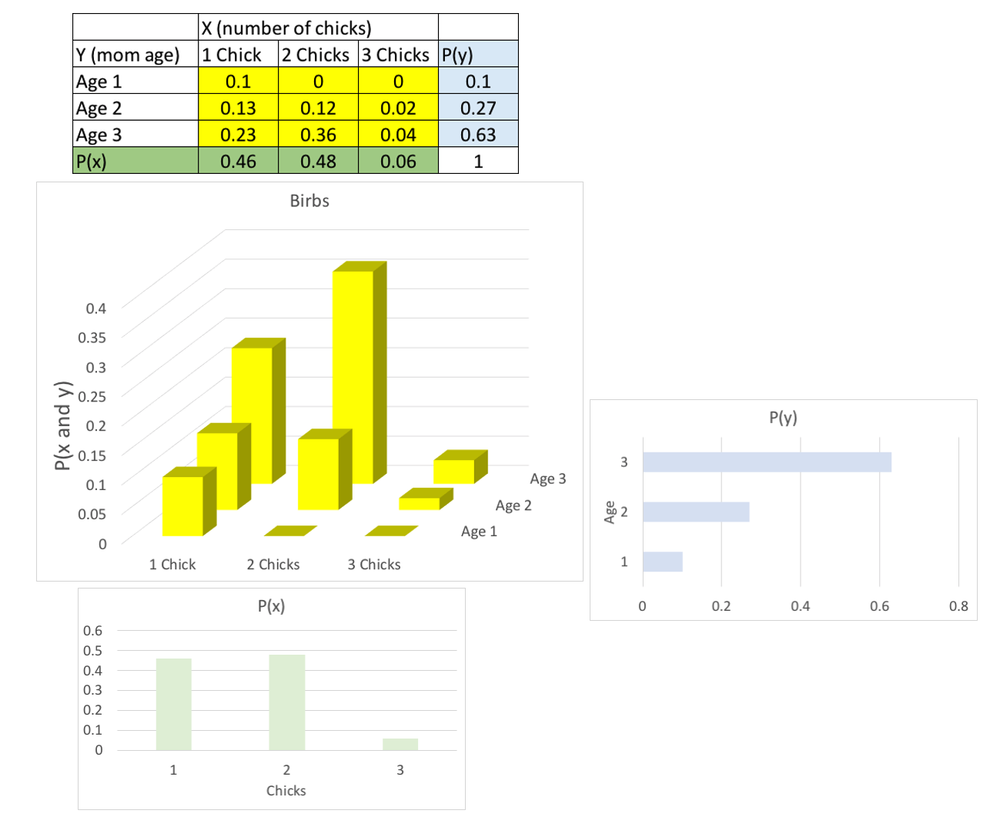

Chapter 5 Properties of random variables
library(tidyverse)
theme_set(theme_bw(base_size = 12) +
theme(strip.background = element_blank(),
panel.grid = element_blank())) 5.1 Expected values and the law of large numbers
When summarizing a probability distribution, it is useful to have a measure of:
- Location (Expectation; E(\(X\)))
- Dispersal (Variance; Var(\(X\)))
In this section, we’re focusing on the expectation.
The expectation of a discrete random variable is the average:
\[ \begin{aligned} \text{E}(X) =& \sum_{i = 1}^{k}x_i P(X = x_i) \\ =& \sum_{i = 1}^{k}x_i f_X(x_i) \\ \end{aligned} \]
If \(Y\) represents a six-sided die, then:
\[ \begin{aligned} \text{E}(Y) =& \sum_{i = 1}^{k}y_i f_Y(y_i) \\ =& 1(1/6) + 2(1/6) + 3(1/6) + 4(1/6) + 5(1/6) + 6(1/6) \\ =& 21/6 \\ =& 7/2 \\ \end{aligned} \]
If \(X\) is continuous:
\[ \begin{aligned} \text{E}(X) =& \int_{- \infty}^{\infty} x f_X(x) dx \\ \end{aligned} \]
Here we are integrating over the probability density function, rather than summing over the mass density function.
5.1.1 Weak law of large numbers
The expectation is more like a long-term average, rather than an actual instance (7/2 is not a possible instance of a dice roll).
\(X_i\) are i.i.d.
Assume E(\(X_1\)) = E(\(X_2\)) = … = E(\(X_n\)) = \(\mu\)
Define \(\overline{X}_n\) as the mean of the observations:
\[ \begin{aligned} \overline{X}_n = \frac{1}{n} (X_1 + X_2 + X_3 + ... + X_n) \end{aligned} \]
As \(n \rightarrow \infty\), \(\overline{X}_n\) “converges in probability” to \(\mu\). This means for any positive constant \(\delta\),
\[ \begin{aligned} lim_{n \rightarrow \infty} \text{P}(|\overline{X}_n - \mu| > \delta) = 0 \end{aligned} \]
5.1.2 Handy facts about expectations
The expectation of a constant times a random variable is the constant times the expectation of the random variable:
\[ \begin{aligned} \text{E}(aX) = a \text{E}(X) \end{aligned} \] The expectation of a constant is the constant:
\[ \begin{aligned} \text{E}(c) = c \end{aligned} \]
The expectation of a sum of random variables is the sum of the expectations of those random variables:
\[ \begin{aligned} \text{E}(X + Y) = \text{E}(X) + \text{E}(Y) \end{aligned} \]
Putting all these facts together, we can calculate the expectation of two random variables \(X\) and \(Y\) as:
\[ \begin{aligned} \text{E}(aX + bY + c) = a \text{E}(X) + b \text{E}(Y) + c \end{aligned} \]
This is called the linearity of expectation, which we will use frequently in the exercises. Linearity does not hold for other measures of location (e.g., median, mode). This fact accounts, in part, for the privileged status of the mean in statistics.
To calculate the expectation of a function:
\[ \begin{aligned} \text{E}[g(X)] = \sum_{i = 1}^{k} g(x_i)f_X(x_i) \end{aligned} \]
\[ \begin{aligned} \text{E}[g(X)] = \int_{-\infty}^{\infty} g(x)f_X(x)dx \end{aligned} \]
5.1.3 Exercise set 5-1
1a. Expected value of a Bernoulli random variable with parameter p?
\[ \begin{aligned} f_X(x) = \text{P}(X = x) = p^x(1 - p)^{1-x} \text{ for } x \in \text{{0, 1}} \\ \end{aligned} \]
Because there are only two outcomes (0 or 1), we can compute the expectation directly:
\[ \begin{aligned} \text{E}(X) =& \sum_0^1 x f_X(x) \\ =& \sum_0^1 x p^x(1 - p)^{1-x} \\ =& 0 p^0(1 - p)^{1-0} + 1 p^1(1 - p)^{1-1} \\ =& 0 p^0(1 - p)^{1} + 1 p^1(1 - p)^{0} \\ =& 0 (1) (1-p) + p(1) \\ =& 0 + p \\ =& p \end{aligned} \]
1b. What is the expected value of a binomial random variable with parameters \(n\) and \(p\)?
Here’s the pmf for the binomial distribution:
\[ \begin{aligned} f_X(x) = \text{P}(X = x) = \binom{n}{x} p^x(1 - p)^{n - x} \text{ for } x \in \text{{0, 1, 2, ..., n}} \\ \end{aligned} \]
If we plug that into the equation for E(\(X\)), we get:
\[ \begin{aligned} \text{E}(X) =& \sum_0^n x f_X(x) \\ =& \sum_0^n x \binom{n}{x} p^x(1 - p)^{n - x} \\ \end{aligned} \] Well, I don’t know how to evaluate this sum directly, considering the upper limit of \(n\) is infinite. So we’ll use the fact that the binomial is the sum of \(n\) independent Bernoulli trials (\(X_i\)).
\[ \begin{aligned} \text{E}(X) =& \text{E}(\sum_{i=1}^nX_i) \end{aligned} \]
Because the expectation is linear, the expectation of the sum is the sum of the expectations; we can rearrange:
\[ \begin{aligned} \text{E}(X) =& \sum_{i=1}^n \text{E}(X_i) \end{aligned} \]
From 1a, we can substitute \(p\) for \(\text{E}(X_i)\):
\[ \begin{aligned} \text{E}(X) =& \sum_{i=1}^n p \\ =& np \end{aligned} \]
1c. What is the expected value of a discrete uniform random variable with parameters \(a\) and \(b\)?
The probability mass function is:
\[ \begin{aligned} \text{P}(X = k) =& \frac{1}{b - a + 1} \\ \end{aligned} \] The expectation is:
\[ \begin{aligned} \text{E}(X) =& \sum_{x = a}^b x f_X(x) \\ =& \sum_{x = a}^b x \frac{1}{b - a + 1} \\ =& \frac{1}{b - a + 1} \sum_{x = a}^b x \\ \end{aligned} \]
We were given a hint that is useful now: for integers \(a\) and \(b\) with \(b > a\), the sum of all the integers including \(a\) and \(b\), is:
\[ \begin{aligned} \sum_{k = a}^b k =& \frac{(a + b)(b - a + 1)}{2} \\ \end{aligned} \]
So, plugging that hint in we get:
\[ \begin{aligned} =& \frac{1}{b - a + 1} \times \frac{(a + b)(b - a + 1)}{2} \\ =& \frac{a + b}{2} \\ \end{aligned} \]
1d. What is the expected value of a continuous uniform random variable with parameters \(a\) and \(b\)?
The probability density function is:
\[ \begin{aligned} \text{P}(X) =& \frac{1}{b - a} \\ \end{aligned} \]
The expectation is:
\[ \begin{aligned} \text{E}(X) =& \int_{a}^b x f_X(x) dx \\ =& \int_{a}^b x \frac{1}{b - a} dx \\ =& \frac{1}{b - a} \int_{a}^b x dx \\ \end{aligned} \]
Now we have to integrate the 2nd term:
\[ \begin{aligned} =& \frac{1}{b - a} \times \frac{1}{2} x^2 \bigg\rvert_{a}^{b} \\ =& \frac{1}{b - a} \times (\frac{b^2}{2} - \frac{a^2}{2}) \\ =& \frac{1}{b - a} \times (\frac{b^2 - a^2}{2}) \\ \end{aligned} \]
We use the hint from earlier, that \(b^2 - a^2 = (b-a)(b+a)\):
\[ \begin{aligned} =& \frac{1}{b - a} \times (\frac{(b-a)(b+a)}{2}) \\ =& \frac{a + b}{2} \\ \end{aligned} \]
- Exploring the law of large numbers by simulation. In Edge’s code block below,
samp.sizerepresents \(n\) in the weak law of large numbers (above);n.sampsrepresents independent random variables \(X_n\). The expectation for all \(X_i\) is \(\mu\).
samp.size <- 20
n.samps <- 1000
samps <- rnorm(samp.size * n.samps, mean = 0, sd = 1)
# Each column represents a random variable, X_i
# Each row represents a sample (instance) drawn from X_i
samp.mat <- matrix(samps, ncol = n.samps)
str(samp.mat)## num [1:20, 1:1000] -0.838 0.625 0.846 -0.187 0.24 ...# Here we calculate the sample mean for each X_i (column)
samp.means <- colMeans(samp.mat)
str(samp.means)## num [1:1000] -0.4343 -0.1757 -0.2925 0.2837 0.0551 ...
2a. What happens if we change samp.size (i.e., \(n\))?
n_vector <- c(1, 5, 20, 50, 100, 1000)
samp_means_mat <- matrix(data = NA, nrow = n.samps, ncol = length(n_vector))
calculate_sample_means <- function(samp.size = 20, n.samps = 1000){
samps <- rnorm(samp.size * n.samps, mean = 0, sd = 1)
samp.mat <- matrix(samps, ncol = n.samps)
samp.means <- colMeans(samp.mat)
return(samp.means)
}
par(mfrow = c(2,3))
set.seed(21)
for(i in 1:length(n_vector)){
samp_size_i <- n_vector[i]
samp_means_i <- calculate_sample_means(samp.size = samp_size_i)
hist(samp_means_i, xlim = c(-3, 3), ylim = c(0, 250),
xlab = "Sample mean",
main = paste("n = ", samp_size_i, sep = ""), col = "red")
}
2b. Using the exponential distribution.
n_vector <- c(1, 5, 20, 50, 100, 1000)
samp_means_mat <- matrix(data = NA, nrow = n.samps, ncol = length(n_vector))
calculate_sample_means_exp <- function(samp.size = 20, n.samps = 1000){
samps <- rexp(samp.size * n.samps, rate = 1)
samp.mat <- matrix(samps, ncol = n.samps)
samp.means <- colMeans(samp.mat)
return(samp.means)
}
par(mfrow = c(2,3))
set.seed(21)
for(i in 1:length(n_vector)){
samp_size_i <- n_vector[i]
samp_means_i <- calculate_sample_means_exp(samp.size = samp_size_i)
hist(samp_means_i,
xlab = "Sample mean",
main = paste("n = ", samp_size_i, sep = ""), col = "red")
}
5.2 Variance and standard deviation
The variance is a measurement of dispersal - i.e., how spread out is the distribution? And spread out from what, exactly? It is useful to think about the distance \(X_i\) takes from the expectation, E\((X)\): \(X - \text{E}(X)\). What if we took the expectation of this - i.e., the average value of the distance from the mean?
\[ \begin{aligned} \text{E}(X - \text{E}(X)) \\ \text{by linearity of expectation, we get:} \\ \text{E}(X) - \text{E}(\text{E}(X)) \\ \text{E}(X) - \text{E}(X) \\ 0 \end{aligned} \]
This won’t work - we need to find a way to constrain the expression inside the parentheses to be non-negative. One way to do this is to use the mean absolute deviation, \(|X - \text{E}(X)|\). Another way is to use the mean squared deviation, \([X - \text{E}(X)]^2\). The squared term constrains the variance to be \(\ge 0\):
\[ \begin{aligned} \text{Var}(X) =& \text{E}([X - \text{E}(X)]^2) \\ \end{aligned} \]
The mean squared deviation has two mathematical advantages:
It is easier to compute mathematically than an analogous quanitity using absolute deviations (but why?)
The variances of linear functions of random variables are ‘beautifully behaved’, whereas the analogous quantities for absolute deviations can be a hassle.
I will just take Edge’s word on these two points for now.
5.2.1 Beautiful properties of the variance
The variance can be rewritten as:
\[ \begin{aligned} \text{Var}(X) = \text{E}(X^2) - [\text{E}(X)]^2 \\ \end{aligned} \]
which is generally easier to compute.
Adding a constant to a random variable does not affect the variance:
\[ \begin{aligned} \text{Var}(a + cX) = c^2\text{Var}(X) \\ \end{aligned} \] where \(a\) and \(c\) are constants.
If \(X\) and \(Y\) are independent random variables, then:
\[ \begin{aligned} \text{Var}(X + Y) = \text{Var}(X) + \text{Var}(Y) \\ \end{aligned} \]
One big problem with the variance is that is in the wrong (\(X^2\)) units. To fix this, we calculate the standard deviation:
\[ \begin{aligned} \text{SD}(X) = \sqrt{\text{Var}(X)} \\ \end{aligned} \]
SD is usually larger (never smaller) than MAD, and is more sensitive to large deviations.
5.2.2 Exercise set 5-2
I had to walk through Edge’s solutions bit by bit; my handwritten version is here.
5.3 Joint distributions, covariance, and correlation
This section covers four key concepts:
Joint probability distribution: the probability distribution of the joint occurrence of \(X\) and \(Y\)
Marginal distribution of X: the probability distribution of \(X\), summing (integrating) over all values of \(Y\)
Covariance: a measurement of the extent to which \(X\) and \(Y\) depart from independence
Correlation: covariance rescaled to go from -1 to 1
5.3.1 Joint probability distributions
Joint probability distribution: the probability distribution of the joint occurrence of \(X\) and \(Y\)
The joint cumulative probability distribution of two random variables \(X\) and \(Y\) is given by:
\[ \begin{aligned} F_{X,Y}(x, y) = \text{P} (X \leq x ~\cap ~ Y \leq y) \end{aligned} \]
Here is the corresponding joint probability mass function:
\[ \begin{aligned} f_{X,Y}(x, y) = \text{P} (X = x ~\cap ~ Y = y) \end{aligned} \]
And for two continuous variables, we can recover the cumulative distribution function by integrating the probability density function with respect to \(X\) and \(Y\):
\[ \begin{aligned} F_{X,Y}(x, y) =& ~ \text{P}(X \leq x ~\cap ~ Y \leq y) \\ =& \int_{- \infty}^{x} \int_{- \infty}^{y} f_{X,Y}(x, y) dx dy \end{aligned} \]
5.3.2 Marginal distributions
Marginal distribution of X: the probability distribution of \(X\), summing (integrating) over all values of \(Y\)
For discrete random variables, the marginal distribution of \(X\) is:
\[ \begin{aligned} f_{X}(x) =& ~ \text{P} (X = x) \\ =& ~ \sum_{y} \text{P} (X = x ~\cap ~ Y = y) \\ =& \sum_{y} f_{X,Y}(x,y) \end{aligned} \]
For continuous random variables, the marginal distribution of \(X\) is:
\[ \begin{aligned} f_{X}(x) =& \int_{- \infty}^{\infty} f_{X,Y}(x, y) dy \end{aligned} \]
5.3.3 Covariance
Covariance is a measurement of the extent to which \(X\) and \(Y\) depart from independence
Such a measure should have two basic properties:
- The number should be positive when \(X\) and \(Y\) increase or decrease together
- The number should be negative when \(X\) increases and \(Y\) decreases (and vice versa).
Consider the random variable \([X - \text{E}(X)][Y - \text{E}(Y)]\). If we sample a joint probability distribution, resulting in a set (\(\Omega\)) of pairs of \((x, y)\), ask yourself:
- Is the sign positive or negative when most of the pairs \((x, y)\) are such that \(x > \text{E}(X)\) and \(y > \text{E}(Y)\)?
- Is the sign positive or negative when most of the pairs \((x, y)\) are such that \(x < \text{E}(X)\) and \(y < \text{E}(Y)\)?
- Is the sign positive or negative when most of the pairs \((x, y)\) are such that \(x > \text{E}(X)\) and \(y < \text{E}(Y)\)?
- Is the sign positive or negative when most of the pairs \((x, y)\) are such that \(x < \text{E}(X)\) and \(y > \text{E}(Y)\)?
Hopefully, you have convinced yourself that the random variable \([X - \text{E}(X)][Y - \text{E}(Y)]\) satisfies the two aforementioned properties. Now we take the expectation of this random variable to arrive at the covariance.
Conveniently (or purposefully?), the covariance is an extension of the variance:
\[ \begin{aligned} \text{Cov}(X,Y) =& ~ \text{E}([X - \text{E}(X)][Y - \text{E}(Y)]) \\ =& ~ \text{E}(XY) - \text{E}(X)\text{E}(Y) \end{aligned} \]
If you replace \(\text{E}(Y)\) with \(\text{E}(X)\) in the above equation, you should recover the definition of Var\((X)\), \(\text{E}(X^2) - [\text{E}(X)]^2\).
If \(X\) and \(Y\) are independent, then \(\text{Cov}(X,Y) = 0\) (we showed this in an earlier problem set).
However, if \(\text{Cov}(X,Y) = 0\), that does not necessarily imply that \(X\) and \(Y\) are independent.
5.3.4 Correlation
Correlation: covariance rescaled to go from -1 to 1
The covariance is not a pure measure of the linear dependence between two variables, because it is sensitive to the scaling of the variables. Therefore, we cannot use the covariance to compare the strengths of different bivariate relationships. In other words, we cannot use the covariance to answer the question: Is the relationship between cereal yield and fertilizer consumption stronger than the relationship between career earnings and college GPA?. Instead, we calculate the correlation:
\[ \begin{aligned} \text{Cor}(X,Y) =& ~ \rho_{X,Y} \\ =& ~ \frac{\text{Cov}(X,Y)}{\sqrt{\text{Var}(X)\text{Var}(Y)}} \\ =& ~ \frac{\text{Cov}(X,Y)}{\sigma_X \sigma_Y}\\ \end{aligned} \]
You can prove to yourself that the correlation is bounded from -1 to 1 using a simple heuristic. Which variable should be the most correlated with \(X\)? Well, that would be \(X\). Plugging in \(X\) for \(Y\), we get:
\[ \begin{aligned} \text{Cor}(X,X) =& ~ \frac{\text{Cov}(X,X)}{\sigma_X \sigma_X} \\ =& ~ \frac{\text{Var}(X)}{\text{Var}(X)} \\ =& ~ 1 \end{aligned} \]
Using the same logic, \(-X\), is the least correlated with \(X\). Try working through the algebra, you should get -1:
\[ \begin{aligned} \text{Cor}(X,-X) =& ~ \frac{\text{Cov}(X,-X)}{\sqrt{\text{Var}(X)\text{Var}(-X)}} \\ =& ~ \frac{\text{E}(X \times -X) - \text{E}(X)\text{E}(-X)}{\sqrt{\text{Var}(X)\text{Var}(-X)}} \\ \end{aligned} \]
5.3.5 Additional exercise
I will add one problem, to reinforce the concepts of joint and marginal distributions, with two discrete random variables. This problem covers similar ideas to Edge’s first exercise in set 5-3.
You watched 100 female birds last spring, and recorded the number of offspring per bird (X; 1, 2, or 3 chicks). You also recorded the age of each mom (Y; 1, 2, or 3 years).
You observed: 10 1-yr olds, all with one chick. 27 2-yr olds; 13 had one chick, 12 had two chicks, and 2 had three chicks. 63 3-yr olds; 23 had one chick, 36 had two chicks, and 4 had three chicks.
Calculate:
The probability of observing each possible outcome (e.g., a 1-yr old bird has 1 chick; a 1-yr old bird has 2 chicks; etc.).
The probability of observing a 1-yr old bird; a 2-yr old bird; and a 3-yr old bird.
The probability of observing 1 chick per mom; 2 chicks per mom; 3 chicks per mom.
STOP! NO PEEKING ! ANSWER IS BELOW:
Wait for it…
…wait for it …
…here it is: an excel (gasp!) plot!

The key here is to recognize that yellow represents the joint probabilities of X and Y; the green and blue represents the marginal probabilities of X and Y, respectively. Stare at this until it clicks. A similar principle applies to continuous distributions, but rather than summing across Y, we integrate across Y to get the marginal distribution of X.
5.3.6 Exercise set 5-3
I had to walk through Edge’s solutions bit by bit; my handwritten version is here.
5.4 Conditional distribution, expectation, variance
For two discrete random variables, the conditional probability mass function is:
\[ \begin{aligned} f_{X|Y}(x |Y = y) =& \text{P}(X = x | Y = y) \\ =& \frac{\text{P} (X = x ~\cap ~ Y = y)}{\text{P}(Y = y)} \\ =& \frac{f_{X,Y}(x,y)}{f_{Y}(y)} \end{aligned} \]
For two continuous random variables, the conditional probability density function is defined similarly:
\[ \begin{aligned} f_{X|Y}(x |Y = y) =& \frac{f_{X,Y}(x,y)}{f_{Y}(y)} \end{aligned} \]
Edge has a nice visualization and explanation of conditional distribution in his Fig 5-5.
5.5 The central limit theorem
Natural populations are large, so we usually gather just a sample and use that as a surrogate for the whole population. If we take \(n\) samples, then another \(n\) samples, and then another \(n\) samples, and calculate \(\overline{X}_1\), \(\overline{X}_2\), and \(\overline{X}_3\), differences in our estimate of \(\overline{X}\) are due to sampling variation. The weak law of large numbers (above) tells us that as \(n\) approaches \(\infty\), our estimate of \(\overline{X}_n\) approaches the true population mean, \(\mu\), and that the Var(\(\overline{X}_n\)) = \(\sigma^2 / n\), approaches 0.
But what is the shape of this distribution? That is where the central limit theorem (CLT) comes in. As \(n\) approaches \(\infty\), the distribution of \(\overline{X}_n\) converges to a normal distribution with expectation \(\mu\) and variance \(\sigma^2 / n\).
An importance consequences of the CLT is the surpising result that the distribution of sample means \(\overline{X}_n\) is approximately normal even when the distribution of the individual observations are not normally distributed! The implications of the CLT are huge: it allows us to use the normal distribution (and the powerful set of analytical tools that depend on it) in real-world situations where the underlying data are not normally distributed, as long as we have enough samples. What is enough? A general rule of thumb is 30, but will vary with the underlying probability distribution of the population. You will explore this using simulations in the problem set below.